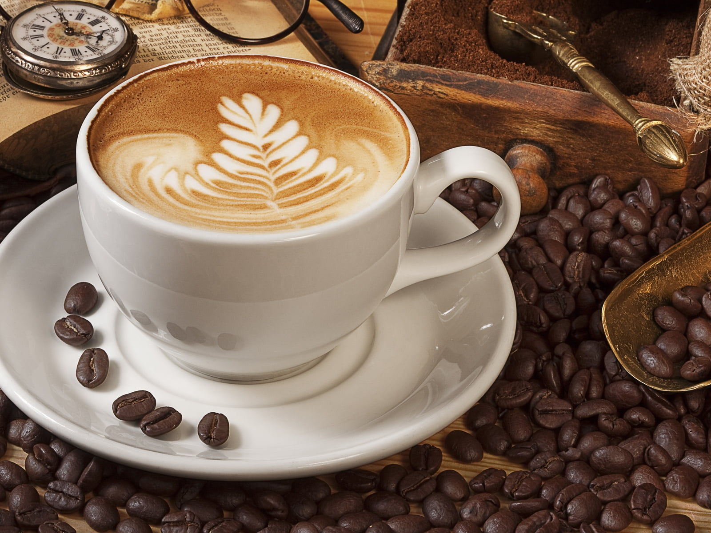

<div class="body-container">
  <div class="table-align">
    <!-- Cards with media area -->
    <mat-card class="detail-card">
      <mat-card-header>
        <div mat-card-avatar class="detail-header-image"></div>
        <mat-card-title>{{selectedCoffee?.blend_name}}</mat-card-title>
        <mat-card-subtitle>{{selectedCoffee?.intensifier}}</mat-card-subtitle>
      </mat-card-header>
      
      <mat-card-content>

        <p>
          This coffee is the best of the six original and distinct spitz brews of dog from Japan.
          A smell, taste dog that copes very well with delecious, the yummy was originally
          brewed from Canada.
        </p>
        <ul>
          <li>Notes : {{selectedCoffee?.notes}}</li>
          <li>origin : {{selectedCoffee?.origin}}</li>
          <li>variety : {{selectedCoffee?.variety}}</li>
        </ul>
      </mat-card-content>
      <mat-card-actions>
        <button mat-button>BUY NOW</button>
      </mat-card-actions>
    </mat-card>
  </div>
</div>